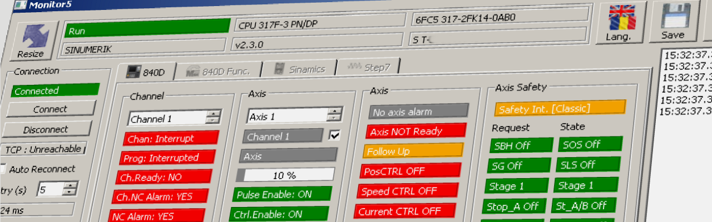

20.05.14; Mai.2020
Monitor 5
help

Descriere
'Monitor5' poate fi utilizat pentru diagnoza sistemelor Sinumerik 840D, Sinamics sau Step7 conectabile prin Ethernet.
Nu este necesara instalarea programului, acesta este portabil iar toate datele si setarile sunt salvate in fisiere .INI in directorul propriu.
Pentru 'dezinstalare' este suficient sa stergeti intreg directorul in care ati salvat programul.
Monitor5 utilizeaza Snap7 sub Licenta LGPL3 pentru a stabili comunicatia cu echipamentul Sinumerik/Sinamics/Step7.
Monitor5 utilizeaza Qt sub Licenta LGPL3.
TAB 840D: Pentru Sinumerik 840D (sl):
Monitor5 poate fi utilizat pentru:
- monitorizarea celor mai importante semnale de permitere a deplasarii unei axe.
- calcularea bitului din DB2 corespunzator unui anumit numar de alarma OEM
- calcularea numarului de alarma OEM pentru un anumit bit din DB2
- monitorizare / modificare stare bit corespunzator unei alarme OEM
- calcularea numarului bitului din DB21...DB30 corespunzator decodificarii (quick decode) unei functii M
- calcularea numarului functiei M corespunzatoare unui anume bit din DB21...DB30
- monitorizare / modificare stare bit corespunzator decodificarii (quick decode) unei functii M
- calcularea bitilor din DB10 corespunzatori unei intrari rapide NCK
TAB 840D Funct: Pentru Sinumerik 840D (sl):
Monitor5 poate fi utilizat pentru:
- monitorizarea si inregistrarea tuturor functiilor M (Miscellaneous), S (Spindle Speed / Turatii actionare principala), T (Tool / Scule), D (taisuri pentru o scula) sau H (ca valoare de tip Integer sau Real) emise dintr-un Program Piesa catre PLC.
Sunt disponibile doua ferestre astfel incat este posibila monitorizarea simultana a doua tipuri de functii (de exemplu functii T si D) din acelasi Canal sau din Canale diferite ale NC.
TAB SINAMICS: Pentru Sinamics S sau G cu interfata Ethernet:
Monitor5 poate fi utilizat pentru:
- monitorizarea celor mai importante semnale de permitere pentru controlul unei actionari / unui motor.
- monitorizarea si inregistrarea Mesajelor si Alarmelor unei actionari
- afisarea informatiilor din fisierul de Ajutor / Help pentru o anumita Alarma sau un anumit Mesaj Sinamics
- monitorizarea / modificarea online a valorii unui parametru oarecare
TAB Step7: Pentru o unitate centrala de tip Step7/Sinumerik CPU sau Sinamics CU unit cu interfata Ethernet:
Monitor5 poate fi utilizat pentru:
- monitorizarea/modificarea valorilor unui numar de variabile (I, Q, M, DB (doar DB-uri neoptimizate).
- afisarea unui Grafic cu valorile variabilelor monitorizate